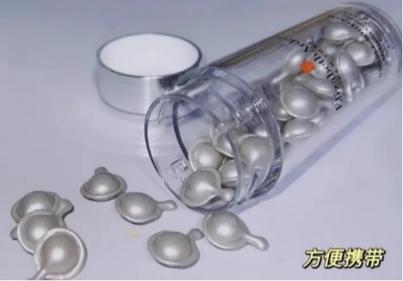

淡斑精华液
OLAY玉兰油淡斑小白瓶
特点：平价、烟酰胺

小白瓶的烟酰胺，浓度为5%，是大多数人都能接受的烟酰胺浓度，相对符合我们的皮肤基准，烟酰胺是抑制肌底黑色素沉淀和生成的物质，姐妹们都在追求的美白，就是他在起作用。Olay相比其他的美白大牌产品而言，性价比比较高，有美白需求的学生党们都能入手，属于折扣时期可以回购的美白精华。
科颜氏淡斑精华
特点：美白+淡斑

科颜氏美白淡斑精华液的效果并不是非常明显，不能说是急救式或者急救型，是用完一整瓶才能够看到效果，是越用越香的精华液。主要成分是透明VC，玻色因和低浓度水杨酸，效果多重，最终作用于美白和淡斑，因为添加了VC成分，有着一股清淡的柠檬味道，香甜不刺鼻
佰草集灯管精华
特点：国货、适合亚洲女性

佰草集灯管精华，是一款好用的美白淡斑国货精华液，采用的是粉液分离的科技,保证护肤品的鲜活度，不用担心接触到空气后失去活性的问题。添加白芍、维C、双重玻尿酸、烟酰胺等多种美白成分，从现在热门的烟酰胺到草本美白成分，一瓶全都拿下。目前来说，美白的效果比较明显，淡斑的效果相对要弱一点。
羽西小瓷瓶
特点：美白+淡斑

前段时间有过一篇靳羽西女士的报道，她是我们春晚的常驻观众，也就是羽西小瓷瓶创始人。羽西有很多款产品，比如灵芝水系列，羽西美白产品是个新尝试。建议早晚坚持使用一整瓶，可以看到明显的效果。包装是非常精致的白色瓶身，乳白色的乳液状，很好吸收。
羽西这一款的成分和佰草集有点像，是白芍、烟酰胺，外加377，主要作用于淡化斑点和去除黑色素上，坚持使用淡斑效果还不错。
修丽可发光瓶
特点：品牌专业背书、美白淡斑

美国杜克教授专业背书，价格比前面几款要略贵一点。1%曲酸、3%氨甲环酸、5%烟酰胺、5%硫磺的科学研发配比，从抑制黑色素、淡化黑色、促进角质层更新等多种角度来解决斑点和白皙问题。如果脸上有顽固斑点或者是肤色不均，可以考虑入手修丽可发光瓶。
雅顿银胶
特点：胶囊设计、针对色斑痘印

雅顿胶囊系列精华，都是采用一颗胶囊的设计，取用很便捷，携带起来小巧不占空间，适合日常、出门旅行、出差等多种场合。雅顿银胶也被称为“冷光胶囊”，主要是针对痘印、色斑等皮肤问题，同时还能提亮肤色。
城野医生377精华
特点：377、温和、美白淡斑-+抗氧化

前段时间一直有争议的城野医生377精华，曾经也是化妆台上的c位，奈何现在天气变热，乳霜质地的精华，略有些厚重。热门成分377，温和美白淡斑，加上富勒烯、白藜芦醇、梅果提取物等抗氧化的成分，适合轻熟肌抗氧化、美白淡斑两不误！